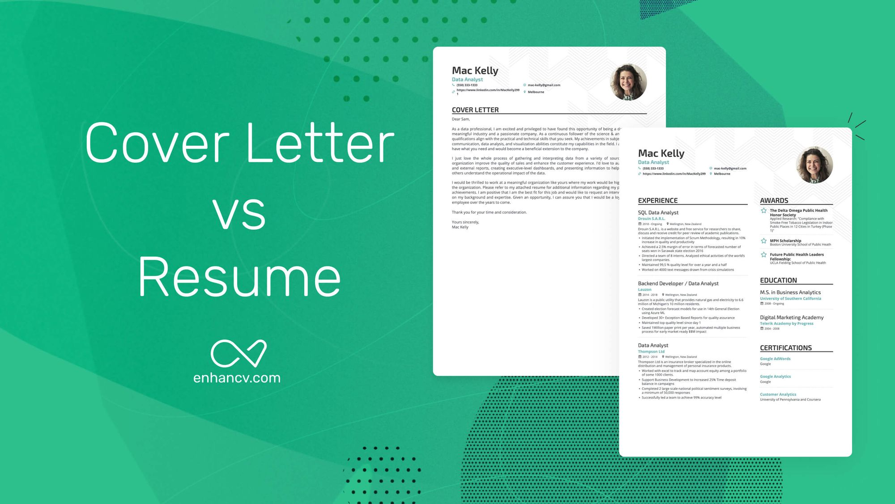

CLL and SoftSkills
Softskills Recommendation Questions
Softskills are as important as hardskills.
1) Differentiate between soft skills and hard skills with five suitable examples from each category. Why is a balance of both essential in today's professional world?
Hard skills are specific, teachable, and quantifiable technical abilities required to perform a particular job.
* Examples: HTML/CSS programming, building PyTorch models, 3D modeling in Blender, structural circuit analysis, and Firebase integration.
Soft skills are interpersonal, non-technical traits that dictate how you work and interact with others.
* Examples: Effective communication, adaptability, time management, teamwork, and critical problem-solving.
Why a balance is essential: Hard skills might get your foot in the door and allow you to execute technical tasks, but soft skills enable you to collaborate with a team, navigate workplace challenges, communicate your ideas to stakeholders, and ultimately grow into leadership roles.
2) Explain the importance of soft skills in academia and industries.
* Academia: Soft skills are critical for collaborating on research, effectively presenting findings at conferences, managing the stress of tight deadlines, and communicating complex theories to peers or students.
* Industries: In the corporate world, soft skills drive client interactions, team cohesion, and conflict resolution. A developer might write excellent code, but without communication skills, they cannot understand client requirements or explain their technical decisions to non-technical managers.
3) Compare and contrast a CV and a resume under the following hence: Purpose, Length, Content.
* Purpose: A CV (Curriculum Vitae) provides a comprehensive history of your academic credentials and professional experience, often used for research, academic, or grant applications. A resume is a targeted summary of your skills and experience tailored for a specific corporate or industry job.
* Length: A CV is typically long (multiple pages) and grows as your career progresses. A resume is short and concise, ideally kept to 1–2 pages.
* Content: A CV includes exhaustive details on education, publications, presentations, honors, and affiliations. A resume focuses strictly on relevant work experience, actionable achievements, technical projects, and a brief education section.
4) Describe any 4 key components of a professional resume. What information should each ideally contain?
1. Contact Information: Name, phone number, professional email address, and a link to a professional portfolio (e.g., GitHub or a personal website).
2. Professional Summary/Objective: A 2-3 sentence pitch highlighting your core competencies and what you aim to bring to the role.
3. Experience/Projects: Bullet points detailing past roles or significant personal projects, focusing on achievements and quantifiable results rather than just duties.
4. Skills: A categorized list of your hard and soft skills relevant to the job (e.g., Programming Languages, Tools, Frameworks).
5) Explain the structure and the format of an effective cover letter. What should the introduction, body and conclusion paragraph convey?
A standard cover letter follows a formal business letter format:
* Introduction: State the exact role you are applying for, how you found it, and a strong "hook" that summarizes your enthusiasm and top qualification for the position.
* Body Paragraph(s): This is where you connect the dots. Instead of repeating your resume, tell a story about a specific project or experience that demonstrates your skills. Show how your background directly solves the employer's needs.
* Conclusion: Reiterate your interest, include a clear call to action (e.g., requesting an interview), and thank the reader for their time.

Cover Letter VS Resume
6) What does it mean to tailor a cover letter to a job description. Explain the process with an example of a job role.
Tailoring means aligning the skills and experiences you highlight with the specific keywords and requirements listed in the job posting.
* Example: If you are applying for a Front-End Web Developer role, your cover letter should highlight your experience building responsive retail websites using HTML, CSS, JavaScript, and Firebase. You would emphasize your ability to create user-friendly pre-order systems, rather than focusing heavily on unrelated academic coursework like RLC circuit analysis or physics theorems.
7) Identify common mistakes candidates make while writing resumes or cover letters and suggest how each can be avoided.
* Mistake: Sending a generic, one-size-fits-all document. Solution: Tailor your resume and cover letter to each specific job description.
* Mistake: Typos and grammatical errors. Solution: Proofread meticulously and use tools like grammar checkers.
* Mistake: Focusing on duties instead of accomplishments. Solution: Use action verbs and quantify results (e.g., "Optimized a model over 5,000 steps to reduce loss" instead of "Trained an AI").
* Mistake: Using an unprofessional email address. Solution: Create a simple, name-based email strictly for job hunting.
8) You are applying for an internship at a reputed firm. Draft the outline of a cover letter that shows your skills and academic background.
Header: Your Name | Location (e.g., Barasat, WB) | Phone | Email | Portfolio Link
Salutation: Dear [Hiring Manager's Name or "Hiring Team"],
Introduction: State your current status (e.g., a highly motivated second-semester B.Tech Biotechnology student). State the specific internship role you are applying for. Provide a brief thesis statement on why your blend of academic rigor and self-taught technical skills makes you a strong fit.
Body Paragraph 1 (Academic & Core Foundation): Highlight relevant academic strengths, laboratory work, or analytical problem-solving skills developed during your B.Tech program.
Body Paragraph 2 (Technical & Practical Application): Showcase specific, self-driven projects. Mention your hands-on experience building functional backend systems (like Firebase) or training custom AI models using Python and PyTorch. Explain the real-world impact of these projects.
Conclusion: Express eagerness to bring your multidisciplinary skill set to their team. Include a call to action requesting an interview.
Sign-off: Sincerely, [Your Name]
9) Explain the pre interview preparation stage. Cover at least 4 aspects a candidate must address before attending an interview.
Before an interview, a candidate must:
1. Research the Company: Understand their products, culture, recent news, and mission statement.
2. Analyze the Job Description: Map your skills and past experiences directly to the requirements listed.
3. Prepare STAR Responses: Draft answers to common behavioral questions using the Situation, Task, Action, Result framework.
4. Prepare Questions for the Interviewer: Have 2-3 insightful questions ready to ask at the end of the interview to show genuine interest.
10) Describe the importance of post interview follow-up. How should a candidate write a thank you mail, and what tone and structure should it follow?
Following up shows professionalism and keeps you fresh in the interviewer's mind.
* Tone: Appreciative, concise, and professional.
* Structure: Send it within 24 hours. Start by thanking them for their time. Briefly reiterate your excitement for the role and mention one specific, interesting topic you discussed during the interview to personalize it. Sign off respectfully.
A Corporate Interview
11) How should a candidate gracefully accept a job offer? Also explain how should one handle rejection professionally while keeping the future opportunities open?
* Accepting: Reply promptly via email or phone. Express your enthusiasm, officially accept the offer, and confirm start dates and any remaining logistical details (like signing contracts).
* Handling Rejection: Reply professionally to the rejection email. Thank them for the opportunity to interview and learn about the company. Politely ask if they can provide any feedback to help you improve, and express your desire to stay in touch for future opportunities.
12) What are the common evaluation criteria employers use during interviews?
Employers typically evaluate:
* Technical/Hard Skills: Can you actually do the job?
* Behavioral Competence: How do you handle conflict, pressure, and teamwork?
* Cultural Fit: Do your working style and values align with the company's environment?
* Communication: Can you articulate your thoughts clearly and listen effectively?
13) Discuss two types of GD and their rules. (structured and unstructured group discussion).
* Structured GD: Candidates are given a specific topic, a set time limit to prepare, and a strictly monitored duration for the discussion. Rules are rigidly enforced regarding speaking time.
* Unstructured GD: The environment is more open. Candidates might be given a vague topic or a case study and are expected to naturally form a discussion flow. It tests organic leadership, direction-setting, and initiative without strict moderator intervention.
14) What strategies should a candidate use to initiate GD's effectively?
Initiating a GD shows leadership, but you must be relevant. Strategies include:
* Providing a clear, concise definition of the core topic.
* Opening with a striking, relevant statistic or fact.
* Using a brief, impactful quote that sets the tone.
* Posing a thought-provoking question to the group to kickstart the dialogue.
15) Explain these GD skills with examples: a) Building on other points. b) Contradicting respectfully. c) Managing interruptions. d) Handling time pressure.
* a) Building on other points: "I completely agree with Rahul's point about backend efficiency, and to add to that, implementing a scalable database could further solve this issue."
* b) Contradicting respectfully: "I understand your perspective on cutting the budget, however, I believe that might compromise the quality of the final product."
* c) Managing interruptions: "Excuse me, I would appreciate the opportunity to finish my thought before we move on."
* d) Handling time pressure: "Since we only have two minutes left, perhaps we should start summarizing our main points to reach a consensus."
Group Discussion
16) How does nonverbal communication fluence a candidate's performance in a GD? Discuss the role of posture, gesture and eye contact.
* Posture: Sitting upright and leaning slightly forward demonstrates active engagement and confidence. Slouching implies disinterest.
* Gesture: Using open hand gestures can emphasize points and show receptiveness. Pointing or aggressive hand movements can seem confrontational.
* Eye Contact: Maintaining steady eye contact with the person speaking, and panning the room when you are speaking, ensures you are addressing the whole group, not just the moderator.
17) Why is online presence important in modern job market? Explain how recruiter screen candidates digitally and what red flags they look for?
Your digital footprint is often your first impression. Recruiters digitally screen candidates by checking LinkedIn, GitHub, and sometimes public social media to verify skills and gauge cultural fit.
* Red Flags: Unprofessional public photos, aggressive or highly controversial public arguments, complaining about former employers or colleagues, and severe inconsistencies between an online profile and a submitted resume.
18) What are the key elements of an optimized LinkedIn profile? Why should your LinkedIn match your resume?
* Key Elements: A professional headshot, a compelling headline that goes beyond just a job title, a comprehensive "About" summary, detailed experience entries with achievements, and endorsements/recommendations.
* Why it must match your resume: Discrepancies between your resume (e.g., dates of employment, job titles) and your LinkedIn profile raise immediate red flags about your honesty and attention to detail.
19) "Professionalism is not an occasional act but a daily habit" explain the statement with reference to at least four qualities that define professional behavior at a workplace.
This statement means that professionalism isn't just wearing a suit to an interview; it's the consistent, everyday behaviors you exhibit.
1. Reliability: Consistently meeting deadlines and following through on promises.
2. Integrity: Being honest about your mistakes and taking responsibility for your work.
3. Respectfulness: Treating all colleagues, regardless of rank, with courtesy and active listening.
4. Accountability: Owning the outcomes of your projects without shifting blame when things go wrong.
20) Discuss the importance of teamwork, leadership, time management and adaptivility as professional skills. How do this collectively contribute to long term career success?
* Teamwork & Leadership: Allow you to collaborate to achieve large-scale goals and guide others when projects lack direction.
* Time Management: Ensures you can juggle multiple priorities without burning out or missing targets.
* Adaptability: Keeps you relevant when technologies or company goals shift unexpectedly.
Long-term contribution: Collectively, these skills ensure you aren't just a technical asset, but a reliable, promotable employee who can handle increasing complexity and guide an organization forward over a long career.